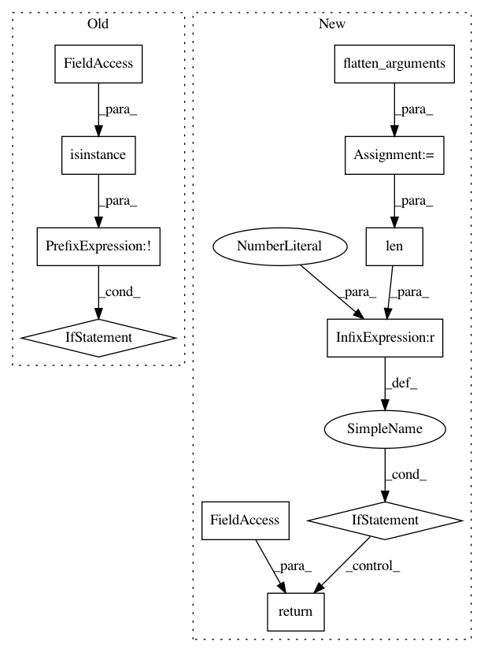

77d86929ba8c3fd29d70742764298e434b297298,pymanopt/autodiff/backends/_tensorflow.py,_TensorFlowBackend,compile_function,#_TensorFlowBackend#Any#Any#,48
Before Change
@Backend._assert_backend_available
def compile_function(self, objective, argument):
if not isinstance(argument, list):
def func(x):
feed_dict = {argument: x}
return self._session.run(objective, feed_dict)
else:
def func(x):
feed_dict = {i: d for i, d in zip(argument, x)}
return self._session.run(objective, feed_dict)
return func
@Backend._assert_backend_available
def compute_gradient(self, objective, argument):
After Change
@Backend._assert_backend_available
def compile_function(self, function, arguments):
flattened_arguments = flatten_arguments(arguments)
if len(flattened_arguments) == 1:
def unary_function(x):
(argument,) = flattened_arguments
feed_dict = {argument: x}
return self._session.run(function, feed_dict)
return unary_function
def nary_function(xs):
flattened_input = flatten_arguments(xs)
feed_dict = {
argument: x
In pattern: SUPERPATTERN
Frequency: 3
Non-data size: 11
Instances
Project Name: pymanopt/pymanopt
Commit Name: 77d86929ba8c3fd29d70742764298e434b297298
Time: 2020-01-27
Author: niklas.koep@gmail.com
File Name: pymanopt/autodiff/backends/_tensorflow.py
Class Name: _TensorFlowBackend
Method Name: compile_function
Project Name: pymanopt/pymanopt
Commit Name: 7ee672fda5a01e29375439b6a18fb1971f90d3c5
Time: 2020-01-27
Author: niklas.koep@gmail.com
File Name: pymanopt/autodiff/backends/_tensorflow.py
Class Name: _TensorFlowBackend
Method Name: compute_hessian
Project Name: pymanopt/pymanopt
Commit Name: e97a5389cd4169b54ded7eb173fc0d4d3f4cf8d5
Time: 2020-01-27
Author: niklas.koep@gmail.com
File Name: pymanopt/autodiff/backends/_tensorflow.py
Class Name: _TensorFlowBackend
Method Name: compute_gradient